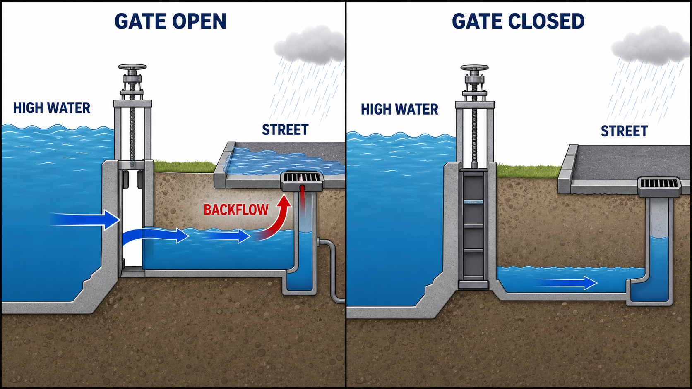

Directions
For Questions 1–30, choose the transition that most precisely completes the text. For Questions 31–45, choose the option that completes the text according to the conventions of Standard English. Read the full relationship or sentence structure before choosing.
Why a closed flood gate can reduce street flooding

Gate open: high river water can enter the lower urban channel, raise its water level, and push water backward through a connected street drain.
Gate closed: the barrier blocks that high-water pathway, so backflow into the street drain becomes less likely.
gate closes → high water cannot enter the urban channel → less backflow → nearby streets are less likely to flood
Logic check: this is direct cause and effect. The closed gate changes the water pathway. It is not merely a detail that fits the situation. The diagram is simplified: a closed gate reduces this backflow risk but cannot prevent every possible source of flooding.
Page 1 of 2
Part 1: Advanced Transition Precision
Question 1
ModerateA botanical conservatory created a night-blooming gallery to help visitors observe flowers that open after sunset. ______ the gallery’s ceiling lights dim gradually as evening approaches, allowing the flowers’ changes to remain visible without harsh illumination.
A. Fittingly,
B. Consequently,
C. Specifically,
D. Nevertheless,
Question 2
ModerateOkot p’Bitek’s poem Song of Lawino (1966) explores postcolonial Ugandan life through the eyes of a woman living in a rural village. With its vibrant imagery, bitingly satiric tone, and dexterous use of traditional Acholi song and phraseology, the poem inspired a generation of East African writers. ______ those who adopted its style are often referred to as Okot School poets.
A. Nevertheless,
B. Fittingly,
C. By comparison,
D. Instead,
Question 3
ModerateEngineers developed a ceramic membrane whose microscopic pores allow water molecules to pass while blocking most dissolved salt ions. ______ a desalination unit using the membrane can produce fresh water at substantially lower pressure than many conventional systems require.
A. Fittingly,
B. For example,
C. In short,
D. Consequently,
Question 4
ModerateAncient pollen preserved in lake sediment can support several kinds of environmental research. ______ scientists can compare pollen layers from different depths to reconstruct how a region’s vegetation shifted during centuries of changing rainfall.
A. In short,
B. Fittingly,
C. Specifically,
D. Nevertheless,
Question 5
EasyWith darkness falling, a mother elephant loses sight of her calf and wants to make sure it is safe. ______ she releases an infrasonic call for the calf to hear. Infrasonic sound is below the range of human hearing, but many animals can hear these sounds from several miles away.
A. For example,
B. For this reason,
C. Nowadays,
D. Similarly,
Question 6
DifficultMost fog-basking beetles collect moisture by holding their bodies at an angle so droplets can run toward their mouths. One coastal species follows a different strategy, ______ the beetle digs a shallow trench that channels condensed water toward its shelter.
A. however:
B. therefore:
C. for example:
D. likewise:
Question 7
EasyBefore the 1847 introduction of the US postage stamp, the cost of postage was usually paid by the recipient of a letter rather than the sender, and recipients were not always able or willing to pay promptly. ______ collecting this fee could be slow and arduous, and heaps of unpaid-for, undeliverable mail piled up in post offices.
A. Regardless,
B. On the contrary,
C. Consequently,
D. For example,
Question 8
ModerateTo trace commerce in a nineteenth-century port, historian Renata Cole digitized shipping ledgers that recorded cargo weights and destinations. ______ she analyzed sailors’ diaries for descriptions of informal exchanges that official records rarely mentioned.
A. Consequently,
B. Specifically,
C. In short,
D. Additionally,
Question 9
ModerateThe research team did not estimate the cave painting’s age by testing the pigment itself. ______ it dated a thin mineral crust that had formed over the painted surface.
A. Rather,
B. Nevertheless,
C. Similarly,
D. Consequently,
Question 10
Easy“O2 Arena,” an award-winning science fiction story by Nigerian author Oghenechovwe Donald Ekpeki, takes place in an alternate version of Nigeria where breathable air is a rare commodity that is owned and sold by companies. ______ people must purchase it with currency called O2 credits.
A. As a result,
B. In any case,
C. Nevertheless,
D. Earlier,
Question 11
ModerateComposer Amina Rafiq is known for orchestral works that imitate the rhythms of ocean waves. ______ the award established in her honor features a glass sculpture shaped like a rising and falling waveform.
A. Specifically,
B. Therefore,
C. For example,
D. Fittingly,
Question 12
ModerateA compact spectrometer could support many kinds of field research that currently require laboratory equipment. ______ marine biologists could carry the device onto small boats to identify dissolved compounds immediately after collecting water samples.
A. In short,
B. Specifically,
C. Nevertheless,
D. Fittingly,
Question 13
DifficultThe lizards on Isla Cobre are generally small enough to hide beneath loose bark. One species breaks that pattern, ______ the island’s ground iguana can grow more than a meter long and spends much of the day in open grassland.
A. for example:
B. likewise:
C. however:
D. therefore:
Question 14
ModerateTo discover which fruit varieties were grown in Italy’s Umbria region before the introduction of industrial farming, botanist Isabella Dalla Ragione often turns to centuries-old lists of cooking ingredients. ______ she analyzes Renaissance paintings of Umbria, as they can provide accurate representations of fruits that were grown there long ago.
A. In sum,
B. Instead,
C. Thus,
D. Additionally,
Question 15
ModerateCritics did not object to the theater restoration because the new paint colors were unusually bright. ______ they argued that several original architectural details had been removed without adequate documentation.
A. Rather,
B. Consequently,
C. Nevertheless,
D. Similarly,
Question 16
ModerateThe annual bird survey does not attempt to estimate the total number of birds living in the forest. ______ it compares changes in calling activity at the same listening stations from year to year.
A. Nevertheless,
B. Rather,
C. Accordingly,
D. Likewise,
Question 17
Moderate“Wishcycling”—putting nonrecyclable items into recycling bins under the mistaken belief that those items can be recycled—ultimately does more harm than good. Nonrecyclable items, such as greasy pizza boxes, can contaminate recyclable materials, rendering entire batches unusable. ______ nonrecyclable products can damage recycling plants’ machinery.
A. Fittingly,
B. On the contrary,
C. Moreover,
D. Nevertheless,
Question 18
ModerateWhen water enters a narrow crack in rock and freezes, it expands. Repeated cycles of freezing and thawing exert pressure on the crack’s walls. ______ the crack gradually widens until pieces of rock may break away.
A. For instance,
B. Fittingly,
C. Meanwhile,
D. Consequently,
Question 19
ModerateThe archive’s audio collection documents many forms of community performance recorded during the 1960s. ______ it contains more than seventy hours of neighborhood radio dramas produced by volunteer actors.
A. Specifically,
B. In short,
C. Fittingly,
D. Therefore,
Question 20
DifficultA 2017 study of sign language learners tested the role of iconicity—the similarity of a sign to the thing it represents—in language acquisition. The study found that the greater the iconicity of a sign, the more likely it was to have been learned. ______ the correlation between acquisition and iconicity was lower than that between acquisition and another factor studied: sign frequency.
A. In fact,
B. In other words,
C. Granted,
D. As a result,
Question 21
DifficultMost deep-sea corals obtain energy by capturing small organisms carried past them by currents. One recently studied species is different, ______ bacteria living in its tissues convert dissolved chemicals into nutrients the coral can use.
A. therefore:
B. however:
C. for example:
D. likewise:
Question 22
DifficultThe reading model does not assume that people process every word on a page with equal attention. ______ it predicts that readers allocate more attention to words that are unexpected or essential to a sentence’s structure.
A. For example,
B. Consequently,
C. Granted,
D. Rather,
Question 23
EasyIt has long been thought that humans first crossed a land bridge into the Americas approximately 13,000 years ago. ______ based on radiocarbon dating of samples uncovered in Mexico, a research team recently suggested that humans may have arrived more than 30,000 years ago—much earlier than previously thought.
A. As a result,
B. Similarly,
C. However,
D. In conclusion,
Question 24
ModerateA national seed bank was established to preserve the genetic diversity of crops grown across the country. ______ its emblem is composed of dozens of differently shaped seeds arranged in a single circle.
A. Fittingly,
B. Consequently,
C. Specifically,
D. Nevertheless,
Question 25
ModerateTo identify where a set of stone tools was made, archaeologists compared trace elements in the tools with those in nearby rock outcrops. ______ they examined microscopic marks left by different shaping techniques.
A. Therefore,
B. Specifically,
C. In short,
D. Additionally,
Question 26
ModerateThe planning report recommends several ways to reduce summer heat in dense neighborhoods. ______ it proposes replacing dark bus-stop roofs with reflective panels and planting shade trees along routes with heavy pedestrian traffic.
A. In short,
B. Specifically,
C. By contrast,
D. Fittingly,
Question 27
DifficultThe Sun and other stars are powered by nuclear fusion reactions, in which two atoms collide to form a single heavier atom, releasing energy. Scientists have long believed that fusion has the potential to meet humanity’s clean energy needs. ______ prior to December 2022, no fusion reaction in a laboratory setting had ever generated a net energy gain.
A. For this reason,
B. Moreover,
C. Specifically,
D. That said,
Question 28
ModerateThe translation collective calls itself Bridge because its members want readers to encounter writing from languages they do not know. ______ the collective’s first volume pairs each poem with two translations created through collaboration between poets from different linguistic communities.
A. Consequently,
B. For example,
C. Fittingly,
D. Nevertheless,
Question 29
DifficultLeafcutter ants typically cultivate fungus in protected chambers below ground. One high-elevation species departs from this pattern, ______ it builds shallow fungus gardens beneath sun-warmed stones, where daytime temperatures are higher.
A. however:
B. therefore:
C. for example:
D. similarly:
Question 30
DifficultWith its clichéd imagery of suburban lawns and power lines, John Ashbery’s 2004 poem “Ignorance of the Law Is No Excuse” may seem barren terrain for critical analysis. ______ cultural critic Lauren Berlant finds fertile ground in just its first two stanzas, devoting most of a book chapter to deciphering the “weight of the default space” Ashbery creates in this poem.
A. Likewise,
B. Nonetheless,
C. In turn,
D. That is,
Page 2 of 2
Part 2: Punctuation Repair
Question 31
ModerateDuring a live interview, the volcanologist began to explain, “The ash plume should disperse once the wind shifts______” but the connection failed before she could finish.
Question 32
ModerateA newly identified pigment, a copper-based blue used in fifteenth-century manuscripts______ remained stable even after researchers exposed the sample to intense light.
A. ,
B. [no punctuation]
C. ;
D. :
Question 33
DifficultThe algae grew rapidly at lower temperatures______ however, the effect disappeared when the nutrient concentration fell below a critical threshold.
A. ,
B. [no punctuation]
C. , and
D. ;
Question 34
ModerateThe acoustic analysis produced one clear conclusion______ the humming came from air moving through narrow stone channels.
A. ,
B. :
C. ; and
D. [no punctuation]
Question 35
ModerateThe map’s oldest layer—drawn before the railway reached the valley______ shows footpaths that disappeared when the reservoir was built.
A. ,
B. [no punctuation]
C. —
D. ;
Question 36
EasyThe pattern of tiny scratches on the recovered tools______ indicates that the objects were repeatedly sharpened against a fine-grained stone.
A. ,
B. :
C. —
D. [no punctuation]
Question 37
ModerateBefore leaving the field station, the researchers checked that they had packed three essential instruments______ a light meter, a soil probe, and a magnetic compass.
A. :
B. ; namely,
C. ,
D. [no punctuation]
Question 38
ModerateThe initial measurements appeared stable______ but the final calibration revealed a small amount of drift in the sensor.
A. [no punctuation]
B. ,
C. ;
D. :
Question 39
ModerateAt the public lecture, the archaeologist said, “The lower sediment layer may date from the early Bronze Age______” when the building’s fire alarm interrupted her explanation.
Question 40
ModerateThe device, a compact sensor developed for cave surveys______ can record humidity, temperature, and carbon dioxide levels once every second.
A. ;
B. [no punctuation]
C. ,
D. —
Question 41
ModerateAcross all four trials, the researchers observed the same pattern______ a faster rise in temperature among the darker shells.
A. ,
B. :
C. ;
D. [no punctuation]
Question 42
EasyEvidence from several deep-sea sediment cores______ supports the hypothesis that a strong current once flowed through the now-quiet basin.
A. [no punctuation]
B. ,
C. :
D. —
Question 43
ModerateThe archive’s newest collection—letters written by dockworkers during the 1930s______ reveals how families adapted when seasonal shipping jobs disappeared.
A. ,
B. [no punctuation]
C. ;
D. —
Question 44
DifficultThe shaded test plots absorbed less heat during the afternoon______ therefore, they retained soil moisture longer than the unshaded plots did.
A. ,
B. [no punctuation]
C. ;
D. :
Question 45
ModerateIn the expedition’s radio log, the navigator began, “We followed the eastern channel until the fog______” before a burst of static cut off the recording.